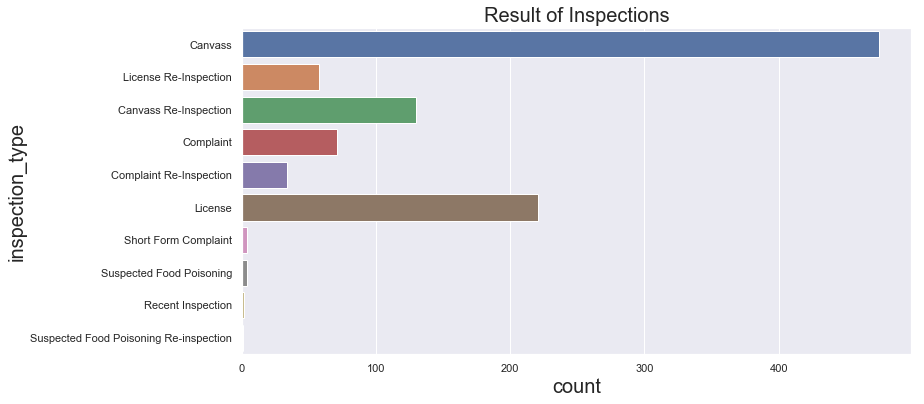

Project Plan
- Project Goal
- Dataset and features
- Exploratory data analysis (EDA)
- Patterns, insights, pecularities of data
- Data preprocessing
- Feature engineering and description
- Cross-validation, hyperparameter tuning
- Validation and learning curves
- Prediction for hold-out and test samples
- Model evaluation with metrics description
- Conclusions
Project Goal
Data Set and Features
Exploratory Data Analysis
#important libraries
%matplotlib inline
import warnings
warnings.filterwarnings('ignore')
import pandas as pd
import seaborn as sns
import matplotlib.pyplot as plt
import json
sns.set(rc={'figure.figsize':(12, 6),"font.size":20,"axes.titlesize":20,"axes.labelsize":20},style="darkgrid")
#sns.set(style="darkgrid")
food_data = pd.read_json('../data/raw/food-inspection.json', convert_dates = ['inspection_date'])
|
:@computed_region_43wa_7qmu |
:@computed_region_6mkv_f3dw |
:@computed_region_awaf_s7ux |
:@computed_region_bdys_3d7i |
:@computed_region_vrxf_vc4k |
address |
aka_name |
city |
dba_name |
facility_type |
inspection_date |
inspection_id |
inspection_type |
latitude |
license_ |
location |
longitude |
results |
risk |
state |
violations |
zip |
| 0 |
27.0 |
4450.0 |
42.0 |
30.0 |
20.0 |
6248 N CALIFORNIA AVE |
MUSASHI JAPANESE RESTAURANT |
CHICAGO |
MUSASHI JAPANESE RESTAURANT |
Restaurant |
2019-03-27 |
2280158 |
Canvass |
41.995400 |
47917 |
{'type': 'Point', 'coordinates': [-87.69971133... |
-87.699711 |
No Entry |
Risk 1 (High) |
IL |
None |
60659.0 |
| 1 |
29.0 |
22243.0 |
34.0 |
657.0 |
36.0 |
6182 N NORTHWEST HWY |
WINESTYLES |
CHICAGO |
WINESTYLES |
Restaurant |
2019-03-27 |
2280117 |
License Re-Inspection |
41.994044 |
2632296 |
{'type': 'Point', 'coordinates': [-87.80211988... |
-87.802120 |
Pass |
Risk 2 (Medium) |
IL |
52. SEWAGE & WASTE WATER PROPERLY DISPOSED - C... |
60631.0 |
| 10 |
42.0 |
4447.0 |
33.0 |
316.0 |
73.0 |
10210 S CENTRAL PARK AVE |
STARBUCKS (ST XAVIER MORRIS HALL) |
CHICAGO |
STARBUCKS |
Restaurant |
2019-03-27 |
2280150 |
Canvass |
41.707481 |
2464644 |
{'type': 'Point', 'coordinates': [-87.71131771... |
-87.711318 |
Pass |
Risk 2 (Medium) |
IL |
10. ADEQUATE HANDWASHING SINKS PROPERLY SUPPLI... |
60655.0 |
| 100 |
36.0 |
14914.0 |
22.0 |
92.0 |
38.0 |
204 N WELLS ST |
THE VEGGIE GRILL |
CHICAGO |
THE VEGGIE GRILL, INC |
Restaurant |
2019-03-25 |
2280011 |
Canvass |
41.885863 |
2560625 |
{'type': 'Point', 'coordinates': [-87.63408111... |
-87.634081 |
Pass w/ Conditions |
Risk 1 (High) |
IL |
1. PERSON IN CHARGE PRESENT, DEMONSTRATES KNOW... |
60606.0 |
| 101 |
42.0 |
22212.0 |
33.0 |
380.0 |
74.0 |
10939 S WESTERN AVE |
SEE THRU CHINESE KITCHEN |
CHICAGO |
SEE THRU CHINESE KITCHEN |
Restaurant |
2019-03-25 |
2279985 |
Canvass Re-Inspection |
41.694221 |
36468 |
{'type': 'Point', 'coordinates': [-87.68108589... |
-87.681086 |
Pass |
Risk 1 (High) |
IL |
51. PLUMBING INSTALLED; PROPER BACKFLOW DEVICE... |
60643.0 |
food_data = food_data.drop(food_data.columns[0:5], axis=1)
shape = food_data.shape
print(" So there are %d rows and %d columns in the data" % (shape[0], shape[1]))
So there are 1000 rows and 17 columns in the data
<class 'pandas.core.frame.DataFrame'>
Int64Index: 1000 entries, 0 to 999
Data columns (total 17 columns):
address 1000 non-null object
aka_name 991 non-null object
city 998 non-null object
dba_name 1000 non-null object
facility_type 984 non-null object
inspection_date 1000 non-null datetime64[ns]
inspection_id 1000 non-null int64
inspection_type 1000 non-null object
latitude 993 non-null float64
license_ 1000 non-null int64
location 993 non-null object
longitude 993 non-null float64
results 1000 non-null object
risk 1000 non-null object
state 1000 non-null object
violations 752 non-null object
zip 998 non-null float64
dtypes: datetime64[ns](1), float64(3), int64(2), object(11)
memory usage: 140.6+ KB
|
inspection_id |
latitude |
license_ |
longitude |
zip |
| count |
1.000000e+03 |
993.000000 |
1.000000e+03 |
993.000000 |
998.000000 |
| mean |
2.275233e+06 |
41.893282 |
1.984464e+06 |
-87.700651 |
60632.749499 |
| std |
1.288494e+04 |
0.088847 |
9.140417e+05 |
0.060822 |
28.677772 |
| min |
2.015568e+06 |
41.677455 |
0.000000e+00 |
-87.914428 |
60091.000000 |
| 25% |
2.269078e+06 |
41.850451 |
1.878466e+06 |
-87.727943 |
60618.000000 |
| 50% |
2.279394e+06 |
41.917238 |
2.373908e+06 |
-87.695312 |
60634.000000 |
| 75% |
2.279743e+06 |
41.961208 |
2.621281e+06 |
-87.655086 |
60647.000000 |
| max |
2.280168e+06 |
42.018813 |
3.808890e+06 |
-87.549716 |
60707.000000 |
plt.figure(figsize=(12,5))
plt.title('Number of Inspections')
per_week = pd.DataFrame()
per_week = food_data[['inspection_date', 'inspection_id']]
per_week.index = pd.to_datetime(per_week['inspection_date'])
per_day = per_week.groupby('inspection_date').count()
per_week = per_week.resample('W').count()
plt.plot(per_day, color='blue', label = 'per-day')
#plt.plot(per_week, color = 'red', label = " per week")
plt.legend(loc='best')
plt.show()
<Figure size 864x360 with 0 Axes>
Text(0.5, 1.0, 'Number of Inspections')
[<matplotlib.lines.Line2D at 0x1a3253a470>]
<matplotlib.legend.Legend at 0x1a32511908>
food_data['results'].value_counts()
Pass w/ Conditions 407
Pass 241
Fail 210
Out of Business 51
No Entry 47
Not Ready 44
Name: results, dtype: int64
ax = sns.countplot(x="results", data=food_data)
plt.title("Result of Inspections")
plt.show()
Text(0.5, 1.0, 'Result of Inspections')
print("%d different types of food establishment facilities were inspected during the period and %d different types of inpsections were conducted during the period."%
(food_data['facility_type'].nunique(), food_data['inspection_type'].nunique()))
36 different types of food establishment facilities were inspected during the period and 10 different types of inpsections were conducted during the period.
food_data['inspection_type'].value_counts()
Canvass 475
License 221
Canvass Re-Inspection 130
Complaint 71
License Re-Inspection 58
Complaint Re-Inspection 34
Short Form Complaint 4
Suspected Food Poisoning 4
Recent Inspection 2
Suspected Food Poisoning Re-inspection 1
Name: inspection_type, dtype: int64
plt.figure(figsize=(12, 6))
ax = sns.countplot(y="inspection_type", data=food_data)
plt.title("Result of Inspections")
plt.show()
<Figure size 864x432 with 0 Axes>
Text(0.5, 1.0, 'Result of Inspections')

plt.figure(figsize=(12, 10))
food_data['facility_type'].value_counts()[0:10]
ax = sns.countplot(y="facility_type", data=food_data)
plt.title("Types of Facilities Inspected")
plt.show()
<Figure size 864x720 with 0 Axes>
Restaurant 631
School 121
Grocery Store 106
Children's Services Facility 19
Long Term Care 15
Bakery 14
Daycare Above and Under 2 Years 12
Mobile Food Preparer 7
Catering 6
Daycare (2 - 6 Years) 6
Name: facility_type, dtype: int64
Text(0.5, 1.0, 'Types of Facilities Inspected')
plt.figure(figsize=(12, 10))
food_data['risk'].value_counts()[0:10]
ax = sns.countplot(y="risk", data=food_data)
plt.title("Risk")
plt.show()
<Figure size 864x720 with 0 Axes>
Risk 1 (High) 795
Risk 2 (Medium) 117
Risk 3 (Low) 84
All 4
Name: risk, dtype: int64
Text(0.5, 1.0, 'Risk')
Label Encoding categorical variables:
- There are couple different ways of label encoding categorical variables. First method is to replace those variables with a dictionary involving key and value pairs of the variables to be encoded:
results_conv = {"results" : {"Fail" : 0, "Pass" : 1, "Pass w/ Conditions" : 2, "Out of Business": 3, "No Entry": 4 , "Not Ready": 5}}
food_data.replace(results_conv, inplace=True)
print(food_data.results.dtype)
- Another method is to change their type as categorical variable. Let's convert inspection_type for example as as categorical variable.
food_data["inspection_type"] = food_data["inspection_type"].astype('category')
food_data["facility_type"] = food_data["facility_type"].astype('category')
food_data["risk"] = food_data["risk"].astype('category')
print(food_data.inspection_type.dtype)
print(food_data.facility_type.dtype)
print(food_data.risk.dtype)
category
category
category
food_data["inspection_type_cat"] = food_data["inspection_type"].cat.codes
food_data["facility_type_cat"] = food_data["facility_type"].cat.codes
food_data["risk_type_cat"] = food_data["risk"].cat.codes
food_data.head()
|
address |
aka_name |
city |
dba_name |
facility_type |
inspection_date |
inspection_id |
inspection_type |
latitude |
license_ |
location |
longitude |
results |
risk |
state |
violations |
zip |
inspection_type_cat |
facility_type_cat |
risk_type_cat |
| 0 |
6248 N CALIFORNIA AVE |
MUSASHI JAPANESE RESTAURANT |
CHICAGO |
MUSASHI JAPANESE RESTAURANT |
Restaurant |
2019-03-27 |
2280158 |
Canvass |
41.995400 |
47917 |
{'type': 'Point', 'coordinates': [-87.69971133... |
-87.699711 |
4 |
Risk 1 (High) |
IL |
None |
60659.0 |
0 |
27 |
1 |
| 1 |
6182 N NORTHWEST HWY |
WINESTYLES |
CHICAGO |
WINESTYLES |
Restaurant |
2019-03-27 |
2280117 |
License Re-Inspection |
41.994044 |
2632296 |
{'type': 'Point', 'coordinates': [-87.80211988... |
-87.802120 |
1 |
Risk 2 (Medium) |
IL |
52. SEWAGE & WASTE WATER PROPERLY DISPOSED - C... |
60631.0 |
5 |
27 |
2 |
| 10 |
10210 S CENTRAL PARK AVE |
STARBUCKS (ST XAVIER MORRIS HALL) |
CHICAGO |
STARBUCKS |
Restaurant |
2019-03-27 |
2280150 |
Canvass |
41.707481 |
2464644 |
{'type': 'Point', 'coordinates': [-87.71131771... |
-87.711318 |
1 |
Risk 2 (Medium) |
IL |
10. ADEQUATE HANDWASHING SINKS PROPERLY SUPPLI... |
60655.0 |
0 |
27 |
2 |
| 100 |
204 N WELLS ST |
THE VEGGIE GRILL |
CHICAGO |
THE VEGGIE GRILL, INC |
Restaurant |
2019-03-25 |
2280011 |
Canvass |
41.885863 |
2560625 |
{'type': 'Point', 'coordinates': [-87.63408111... |
-87.634081 |
2 |
Risk 1 (High) |
IL |
1. PERSON IN CHARGE PRESENT, DEMONSTRATES KNOW... |
60606.0 |
0 |
27 |
1 |
| 101 |
10939 S WESTERN AVE |
SEE THRU CHINESE KITCHEN |
CHICAGO |
SEE THRU CHINESE KITCHEN |
Restaurant |
2019-03-25 |
2279985 |
Canvass Re-Inspection |
41.694221 |
36468 |
{'type': 'Point', 'coordinates': [-87.68108589... |
-87.681086 |
1 |
Risk 1 (High) |
IL |
51. PLUMBING INSTALLED; PROPER BACKFLOW DEVICE... |
60643.0 |
1 |
27 |
1 |
pass_inspection = food_data[(food_data['results']== 1) | (food_data['results']== 2) ]
fail_inspection = food_data[food_data['results']== 0]
import plotly.plotly as py
import plotly.graph_objs as go
mapbox_access_token = "pk.eyJ1IjoiZGlwYWtyaW1hbCIsImEiOiJjanR0NHp5Z3gxOGVtNGVsbHIxOGI3ZmV6In0.bmrI81LR7L441sUKqDeKmw"
data_pass = [
go.Scattermapbox(
lat=pass_inspection['latitude'],
lon=pass_inspection['longitude'],
mode='markers',
marker=go.scattermapbox.Marker(
size=12,
color='rgb(50, 255, 100)',
opacity=0.7
),
text = pass_inspection['dba_name'] + ' <br> Pass ',
hoverinfo='text'
),
go.Scattermapbox(
lat=fail_inspection['latitude'],
lon=fail_inspection['longitude'],
mode='markers',
marker=go.scattermapbox.Marker(
size=12,
color='rgb(255, 0, 0)',
opacity=0.7
),
text = fail_inspection['dba_name'] + ' <br> Fail ',
hoverinfo='text'
)
]
layout = go.Layout(
title = "Chicago Food Insepections",
autosize=True,
showlegend=False,
hovermode='closest',
mapbox=go.layout.Mapbox(
accesstoken=mapbox_access_token,
bearing=0,
center=go.layout.mapbox.Center(
lat=41.9,
lon=-87.6
),
pitch=0,
zoom=9,
style='light'
),
)
fig = go.Figure(data=data_pass, layout=layout)
py.iplot(fig, filename='Chicago')
High five! You successfully sent some data to your account on plotly. View your plot in your browser at https://plot.ly/~dipakrimal/0 or inside your plot.ly account where it is named 'Chicago'
plt.figure(figsize=(12, 6))
ax = sns.countplot(y="inspection_type", hue="results", data=food_data)
plt.title(" Types of Inspections ")
plt.show()
<Figure size 864x432 with 0 Axes>
Text(0.5, 1.0, ' Types of Inspections ')
plt.figure(figsize=(12, 6))
ax = sns.countplot(y="inspection_type", data=pass_inspection)
plt.title(" Types of Inspections for facilities that passed the inspection ")
plt.show()
<Figure size 864x432 with 0 Axes>
Text(0.5, 1.0, ' Types of Inspections for facilities that passed the inspection ')
plt.figure(figsize=(12, 6))
ax = sns.countplot(y="inspection_type", data=fail_inspection)
plt.title(" Types of Inspections for facilities that failed the inspection ")
plt.show()
<Figure size 864x432 with 0 Axes>
Text(0.5, 1.0, ' Types of Inspections for facilities that failed the inspection ')
data_pass_fail=food_data[food_data['results'] < 3]
plt.figure(figsize=(18, 6))
g = sns.catplot(x="risk_type_cat", y="results", kind="violin", inner=None, data=data_pass_fail)
sns.swarmplot(x="risk_type_cat", y="results", color="k", size=3, data=data_pass_fail, ax=g.ax);
#ax = sns.swarmplot(x= "risk_type_cat", y="results", hue='inspection_type_cat', data=data_pass_fail, kind='bar')
plt.title("risk type vs result ")
plt.show()
<Figure size 1296x432 with 0 Axes>
<matplotlib.axes._subplots.AxesSubplot at 0x1a2ada4358>
Text(0.5, 1.0, 'risk type vs result ')
<Figure size 1296x432 with 0 Axes>